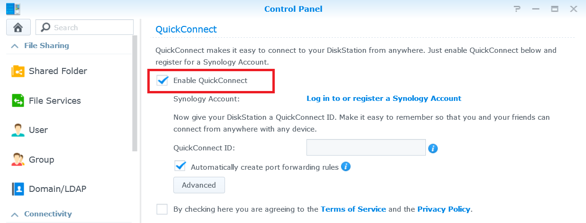

Få åtkomst till din Synology NAS över Internet och dela filer

Översikt
Med QuickConnect kan du enkelt ansluta din Synology NAS över Internet utan bekymmer med att ställa in regler för vidarebefordran av portar eller andra komplicerade nätverksinställningar. QuickConnect låter dig enkelt ansluta via en enkel anpassningsbar adress, exempelvis Quickconnect.to/exempel.
1. Konfigurera QuickConnect
- Gå till Kontrollpanel > QuickConnect.
- Markera rutan Aktivera QuickConnect.

- Om du inte har ett Synology-konto, klicka på Logga in på eller registrera ett Synology-konto. Ange den efterfrågade informationen och klicka på OK. Om du redan har ett Synology-konto, ange din kontoinformation.

- Ange ditt eget QuickConnect ID i fältet QuickConnect ID. Klicka sedan på Tillämpa.

- Information om din QuickConnect-länk visas. Använd de här länkarna för att få åtkomst till din Synology NAS. I detta exempel är adressen till DSM http://Quickconnect.to/YourID.

- Om du inte ser länken för QuickConnect till DSM kan du klicka på Avancerat och säkerställa att DSM är aktiverad.

- Du kan nu använda länken för QuickConnect till DSM för att få åtkomst till din Synology NAS!

2. Dela filer på din NAS med QuickConnect
Med QuickConnect aktiverat kan du enkelt dela filer som är lagrade på din Synology NAS med alla, utan att bekymra dig om vidarebefordring av port.
- Aktivera först HTTPS-anslutning för att dela dina filer säkert. Gå till Kontrollpanel > Nätverk.
- Markera rutan Aktivera HTTPS-anslutning och klicka på Tillämpa.

- Aktivera sedan fildelning för QuickConnect. Gå till Kontrollpanel > QuickConnect.
- Klicka på Avancerad och kontrollera att rutan för Fildelning är markerad.

Obs:
Vid konfigurering av avancerade inställningar för QuickConnect rekommenderar vi att du loggar in på DSM med den lokala IP-adressen eller domännamnet för din Synology NAS.
- Du är nu redo att börja dela filer med QuickConnect. Öppna File Station och högerklicka på den fil eller mapp som du vill dela. Klicka sedan på Dela fillänkar i snabbmenyn.

- En fildelningslänk skapas. Dela helt enkelt denna länk så att familj och vänner kan ladda ned den delade mappen/filen.